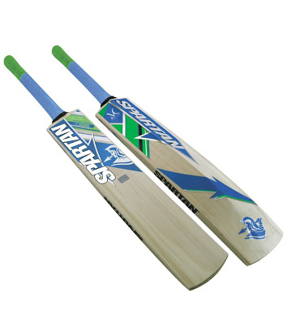
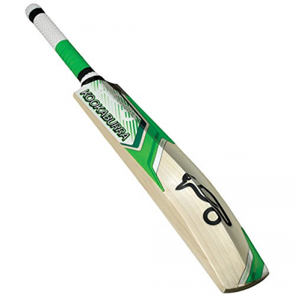
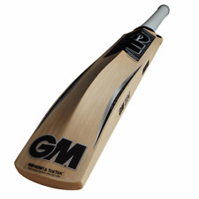

MRF Genius(X) Limited Edition Virat Kohli Endorsed English Willow Cricket Bat, Short Handle
-Made from top of the line English willow
-Traditionally shaped, designed for comfort and light pick up
-Comes with adjustable paddd cover
-Packing: 1 No
*NEW PRICE:Rs3,520.00
OLD PRICE:Rs8,520.00

Spartan Chris Gayle RUN CB-808 English Willow Bat (Original)
-Crafted for the modern day big Hitter
-Designed to compliment your Game with explosive power.
-Brand: Spartan
-English Willow
-Chris Gayle Series *NEW PRICE:Rs2,430.00
OLD PRICE:Rs5120.00

Kookaburra Ghost 300 English Willow Bat (Original)
-Unbleached English Willow
-High Extended Spine and Super Bow
-Round Handle for strength and flexibility
-Naturally Air Dried and Hand crafted
-Size Available SH / Mens
*NEW PRICE:Rs4,730.00
OLD PRICE:Rs9,000.00

GM Zona F2 Excalibur English Willow Cricket Bat, Men's Short Handle
-Size: Short handle
-Willow: English willow
-Sarawak cane handle
-Traditionally shaped and styled for maximum stability while playing shots
-Bat weight:1160-1210 gms
*NEW PRICE:Rs1,900.00
OLD PRICE:Rs3,120.00
VIJAY:The quality of products are also good. The english willow bats are also very cheap as compared to market.
SHANKAR:This allows me to be in touch with all the happening in cricket, and i am still using my MRF bat which i bought the previous year.
ABHINAV:My spartan bat is still tearing the bowlers and it is all because of the cheap prices i was able to get 1 for me.
AKASH:I ordered a GM bat previous week and it came in just 2 days.The service is very good.